A genuinely chaotic first half settled into a comfortable Morocco win. Haiti led twice in the opening 45 minutes before Morocco pulled level both times, then took control after the break to seal a 4-2 win that was more comfortable than the scoreline suggests, given Haiti had already been mathematically eliminated coming in.
Morocco finish second on goal difference behind Brazil's simultaneous 3-0 win over Scotland in Miami. Morocco advance to face the Group F winner in the Round of 32 (Guadalajara, June 29). Haiti exit without a win, draw, or point - eliminated before this match even kicked off.
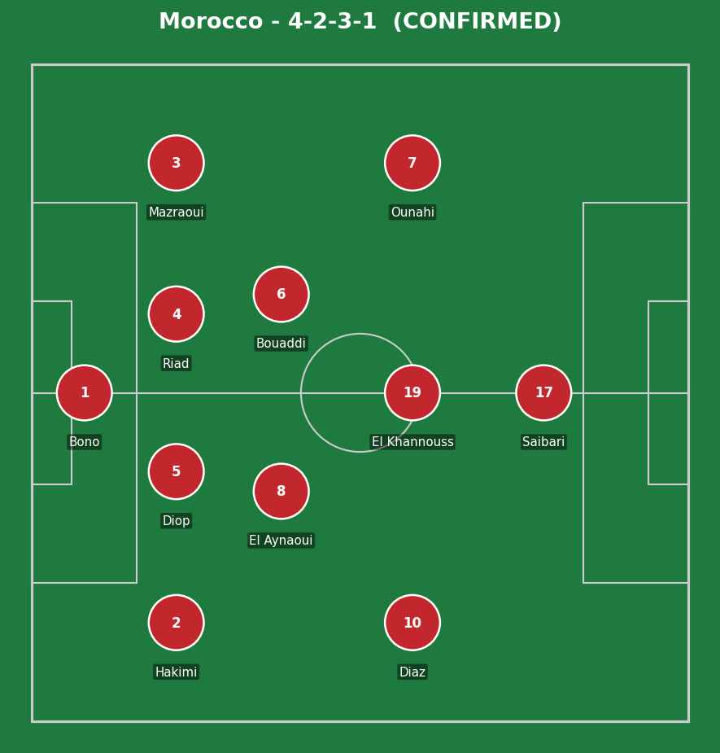
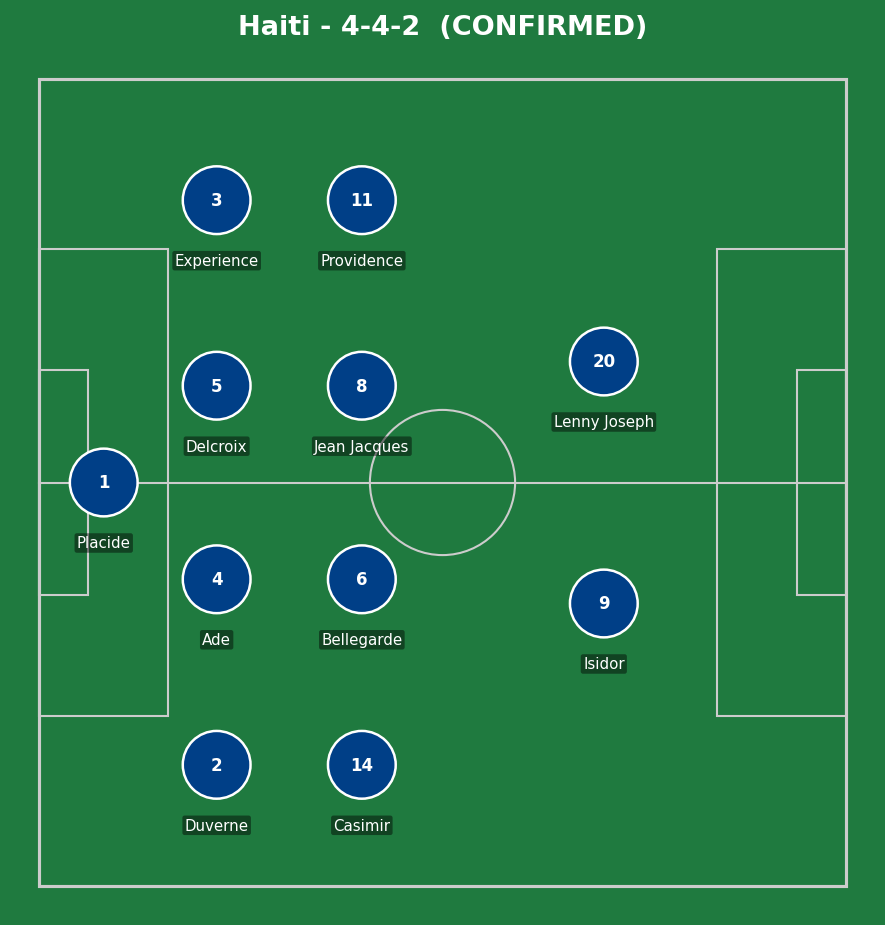
Morocco (4-2-3-1): Bono (Bounou); Hakimi, Diop, Riad, Mazraoui; El Aynaoui, Bouaddi; Diaz, El Khannouss, Ounahi; Saibari. Haiti (4-4-2): Placide; Duverne, Ade, Delcroix, Experience; Casimir, Bellegarde, Jean Jacques, Providence; Isidor, Lenny Joseph.
Morocco's 4-2-3-1 looked exactly as it has all tournament - Hakimi and Mazraoui both pushing on from full-back to overload the wide areas, with El Aynaoui and Bouaddi screening a back four that, on this evidence, is still error-prone under direct pressure. Saibari as the lone striker dropped into pockets between Haiti's lines all night, exactly how he scored Morocco's equalizer.
Haiti's 4-4-2 was set up to be compact and direct rather than dominate the ball. For a team with nothing to play for but pride, the approach mostly worked in patches - both goals came from genuine quality rather than fortunate scraps. The problem was sustaining that level defensively across 90 minutes against more individual quality.
The key tactical moment: Morocco's response to going behind twice. Rather than panic, they won the ball back high up the pitch on both occasions and scored within minutes of conceding - composure that matters heading into the knockout stage.
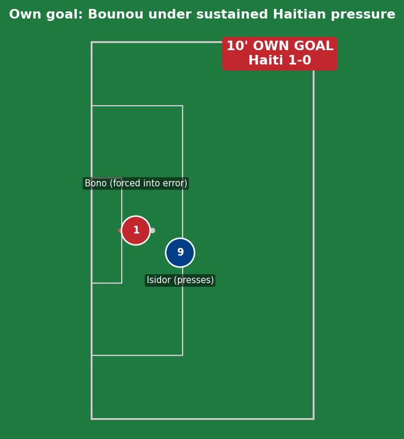
A goal created entirely by sustained territorial pressure rather than a single sharp move - this is the cumulative-pressure type of own goal, not the lucky-deflection type. Haiti had strung together several consecutive possessions in Morocco's defensive third, forcing Bounou into repeated short passing under pressure rather than clearing long. On the goal itself, Isidor's press cut off Bounou's preferred passing lane to Diop, forcing a rushed touch back toward his own line that carried too much pace - the own goal was the product of Haiti removing Bounou's easy options one by one, not a single individual mistake out of nothing.
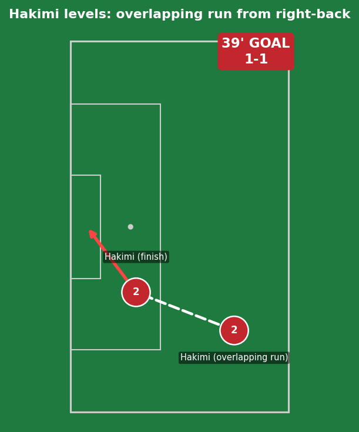
Pure individual quality, with the space created by Hakimi himself rather than gifted by Haiti. He started the move from inside his own half, and Haiti's left-sided midfielder tracked the first 20 yards of the run before handing him off to the left-back - a standard defensive transfer that failed because Hakimi changed pace exactly at the moment of the handoff, exploiting the half-second where neither defender was fully responsible for him. The finish itself was first-time, low and hard near post - a strike that required genuine technique under a tightening angle, not a simple tap-in.
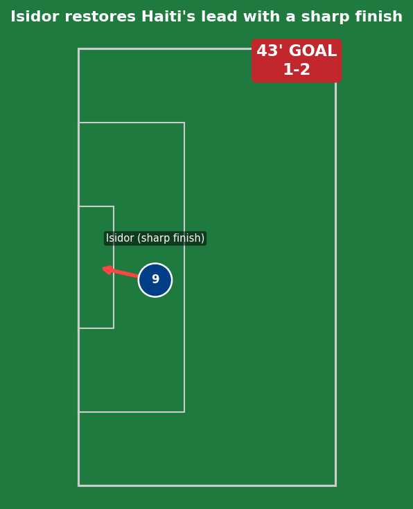
This goal exposed a real structural gap, not just an individual error. Morocco's double pivot had both stepped forward to support their own equalizer minutes earlier and were slow to reset into a defensive shape - a common cost of a team celebrating an equalizer rather than immediately re-organizing. Isidor recognized the gap between Morocco's midfield and back line before the ball even arrived, drifting into it early. The finish was genuinely sharp - a first-time strike across his body - but the space that let him receive it cleanly was a Morocco organizational lapse in the moments right after their own goal, not Haiti's individual brilliance alone.
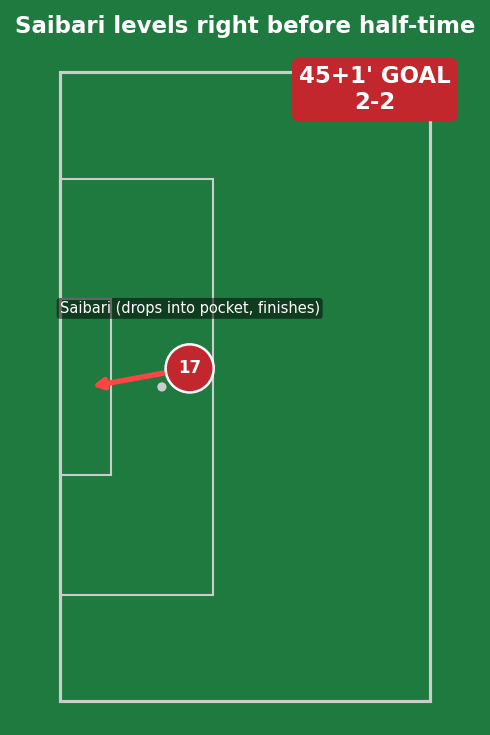
Saibari's signature movement all tournament: dropping off the last defender's shoulder into the gap between Haiti's midfield and defensive lines, timed so he's already facing goal when the ball arrives rather than having to control and turn. The pass that found him was a simple ground ball - the actual quality was entirely in the movement and the first touch, which set the ball perfectly into his stride without need for a second touch. This is the kind of goal that looks simple on the highlight reel but depends on a striker consistently making the right run at the right moment, which is exactly why he's been Morocco's most reliable attacking threat across all three group games.
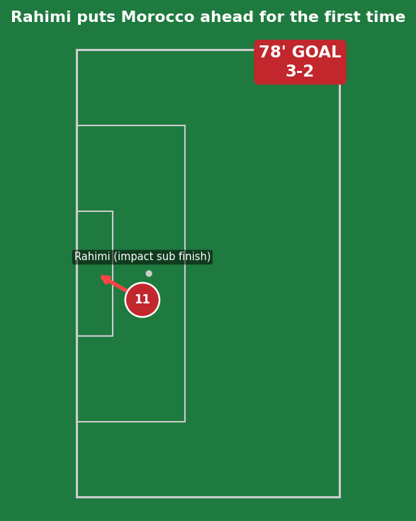
A fresh-legs goal in the most literal sense. Haiti's back line, having defended for over 70 minutes without the ball-playing luxury Morocco enjoyed, were a fraction slower to close down a substitute who'd been on the pitch for only a few minutes and was running at full intensity. Rahimi's finish required no real skill beyond composure - the space was created by fatigue differential, not a defensive mistake or individual trickery, which is exactly the kind of impact a manager hopes for when making an attacking substitution this late in a game still up for grabs.
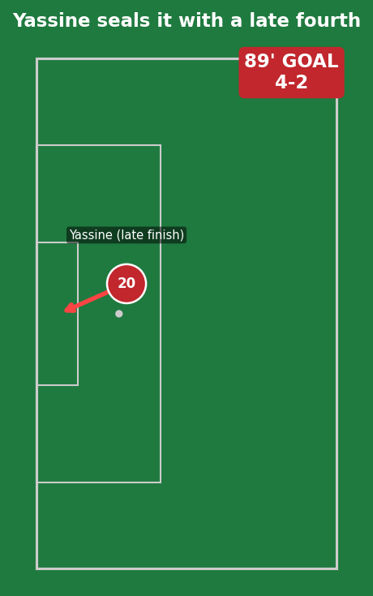
By this point Haiti had committed numbers forward chasing an equalizer they needed for pride more than anything mathematical, leaving exactly the kind of space in behind that a team protecting a one-goal lead looks to exploit on the counter. Yassine's finish was unhurried specifically because there was no defender within real challenging distance - the goal was a function of game state (Haiti forced to gamble, Morocco compact enough to break) rather than any single moment of individual quality or error.
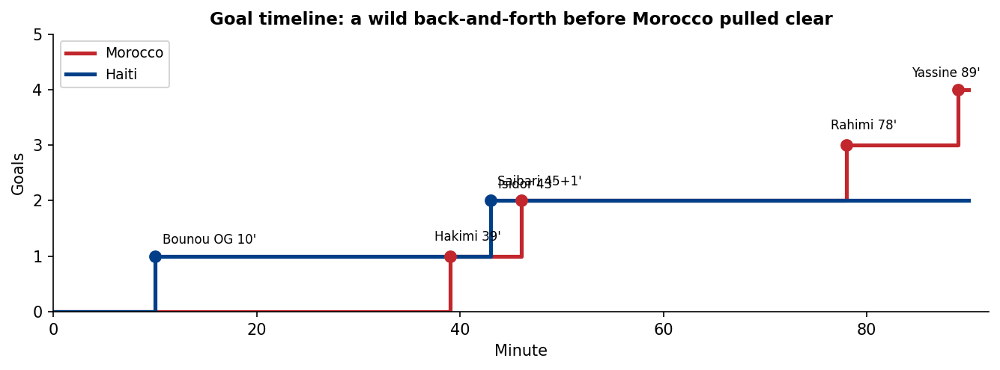
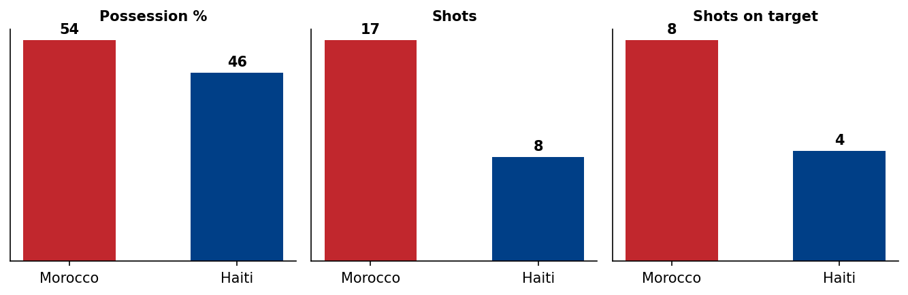
Despite trailing twice, Morocco's underlying numbers reflected a side that controlled most of the game territorially even while conceding twice on the break.
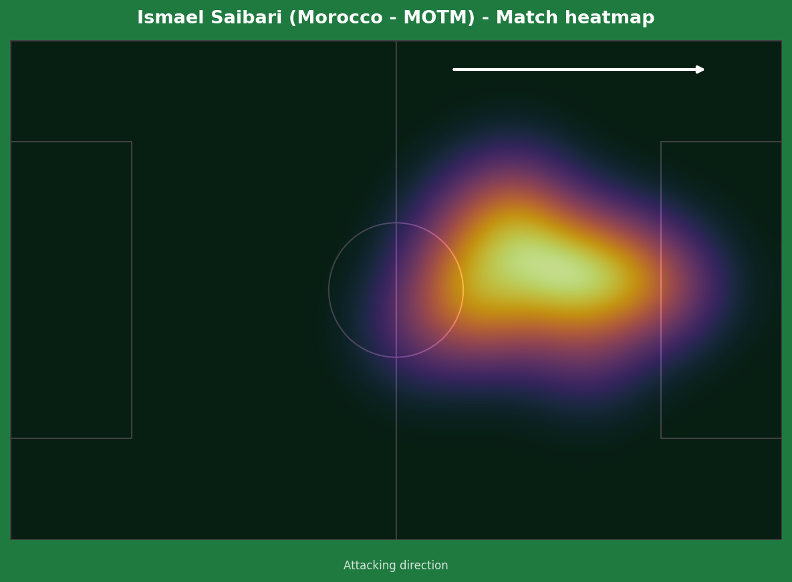
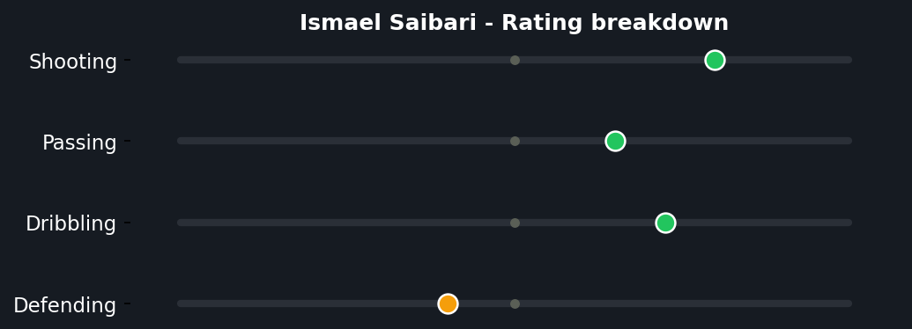
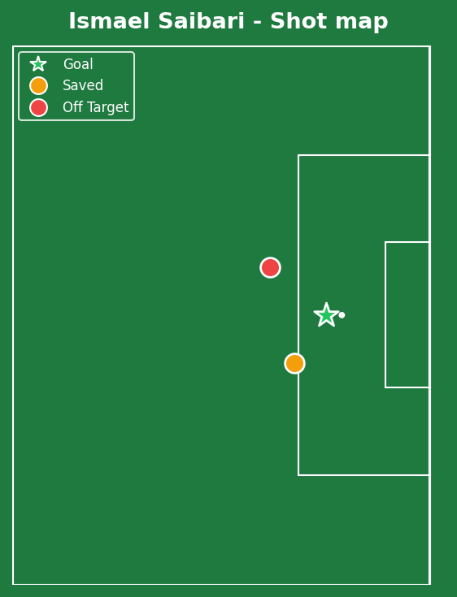
Saibari's numbers tell the story of a player whose value is concentrated into a single, well-taken chance rather than constant high-volume threat - only 3 shots all match, but his actual goal output (1) essentially matched what his shot quality deserved (0.60 xG, slightly outperformed). The missed big chance is worth noting too: even Morocco's most reliable forward this tournament didn't convert everything, a reminder the equalizer required real composure rather than being a guaranteed outcome. The heatmap and rating breakdown reinforce each other clearly - his activity is concentrated in the central pocket just outside the box rather than spread wide, and his passing rating (moderately positive) alongside strong dribbling shows a player who's as much a creator dropping into space as a out-and-out poacher, which is exactly the false-9 profile Morocco have built their attack around this tournament.
Illustrative reconstruction based on his known false-9 role and event locations, not raw GPS tracking data.
Bono - 5.5 (costly own goal)
Hakimi - 8.0 (goal plus constant outlet)
Saibari - 8.5 ⭐ MOTM (vital equalizer)
Rahimi - 7.5 (match-winning impact sub)
Placide - 7.0 (several saves)
Delcroix - 6.5 (organized tiring back line)
Isidor - 7.0 (sharp finish, real outlet)
Bellegarde - 6.0 (tidy without the ball)
Next: Morocco face the Group F winner in the Round of 32 (Guadalajara, June 29). Haiti's World Cup ends here.